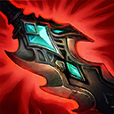

核心裝備
 殞落王者之劍
殞落王者之劍 幻影之舞
幻影之舞 無盡之刃
無盡之刃 致死宣告
致死宣告 守護天使
守護天使

以下為本站 7.2d 校正後的標準配置；實戰仍需依敵方陣容調整。


技能優先：E > Q > W
攻擊、暴擊與擊殺累積怒氣，怒氣提高暴擊率，也可用來強化一技能治療。

生命越低被動物攻越高；主動消耗怒氣回復生命。
降低附近敵人的物攻，若敵人背對泰達米爾還會受到明顯緩速。
旋轉位移並傷害沿途敵人，暴擊可協助縮短冷卻，是追擊與穿牆工具。
短時間內生命不會降到致死門檻，可在殘血繼續輸出後再撤退或治療。
3技 → 普攻 → 1技治療
旋風斬接近後打一至兩次普攻，血量不佳時用一技消耗怒氣回復。
2技 → 3技 → 普攻 → 普攻
從敵人背後施放二技造成減速，再用三技貼近持續普攻。
4技 → 普攻 → 3技撤退 → 1技治療
瀕死前開大維持生命，完成擊殺後用三技離塔並在大絕結束前回復。
先累積怒氣再進行河道或野區交戰，低怒氣時不要高估暴擊能力。三技穿過多個野怪可加快清野，Gank 時從敵人背後施放二技才會觸發緩速。
攻速與暴擊裝成形後，利用單挑優勢入侵、抓落單和快速處理物件。大絕能支撐越塔，但進場前必須先規劃三技撤退路線。
正面團戰容易被風箏，應從側翼切入或先在邊線製造壓力。無盡怒火結束前用三技脫離，再消耗怒氣用一技回復，避免大絕結束後立即倒下。
對局名單是本站依英雄機制與目前配置整理的參考，不等同固定勝率。
打野先維持標準刷野與節奏裝，只有敵方陣容或我方前排需求明顯時才調整。
觸發：敵方前排多，物件團與正面團戰會長時間卡在高生命目標上。
斷切能直接提高對高生命敵人的普攻傷害。
觸發：敵方能在你進場或搶物件前快速把你秒掉。
魔提斯深淵提供魔防與低血量魔法護盾，比單純增加輸出更能保住進場或持續輸出。
觸發：進場或搶物件時經常被控制鏈直接中斷節奏。
先購買水銀飾帶取得主動解控，之後再合成水星彎刀；水銀飾帶是合成組件，不是另一件要與水星彎刀互換的成裝。
犧牲部分輸出型傳奇符文，換取韌性與緩速抗性。
觸發：敵方前排、鬥士或吸血核心能在物件團長時間回復。
標準配置已經有重創，維持即可。
觸發：我方陣容沒有可靠第一承傷點，團戰需要有人更早進場吸收注意力。
若標準配置已經有半坦容錯，就不必再犧牲核心傷害。
提醒：「缺前排」不代表所有打野都要改坦裝；刺客、法師與射手打野硬轉坦通常會失去英雄價值。
7.2a 打野正式版：技能名稱與核心機制依 Riot Games 台灣《激鬥峽谷》英雄頁及本站既有正式英雄資料校正；出裝、符文、技能順序、對局與前中後期節奏以目前 7.2a 打野版本基準整理。｜v55：完成打野第四批正式版，完整套用李星固定打野母版，補齊起手裝、核心三件、五件成裝、技能加點、三組連招、對局與實戰節奏。
本站於 2026-08-27 依 Patch 7.2d 重新檢查此配置。 Tier、出裝、符文與對局屬於 Wild Rift Guide 的整理與分析，不是 Riot Games 官方推薦；版本改動後會再依官方公告與實戰資料校正。